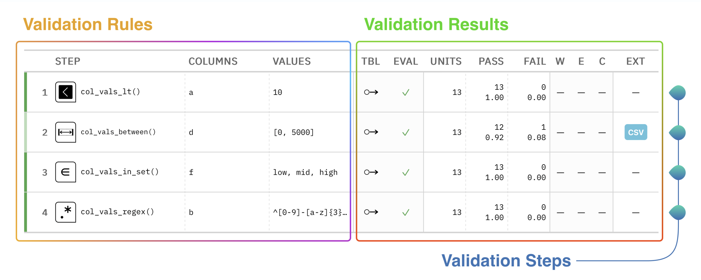
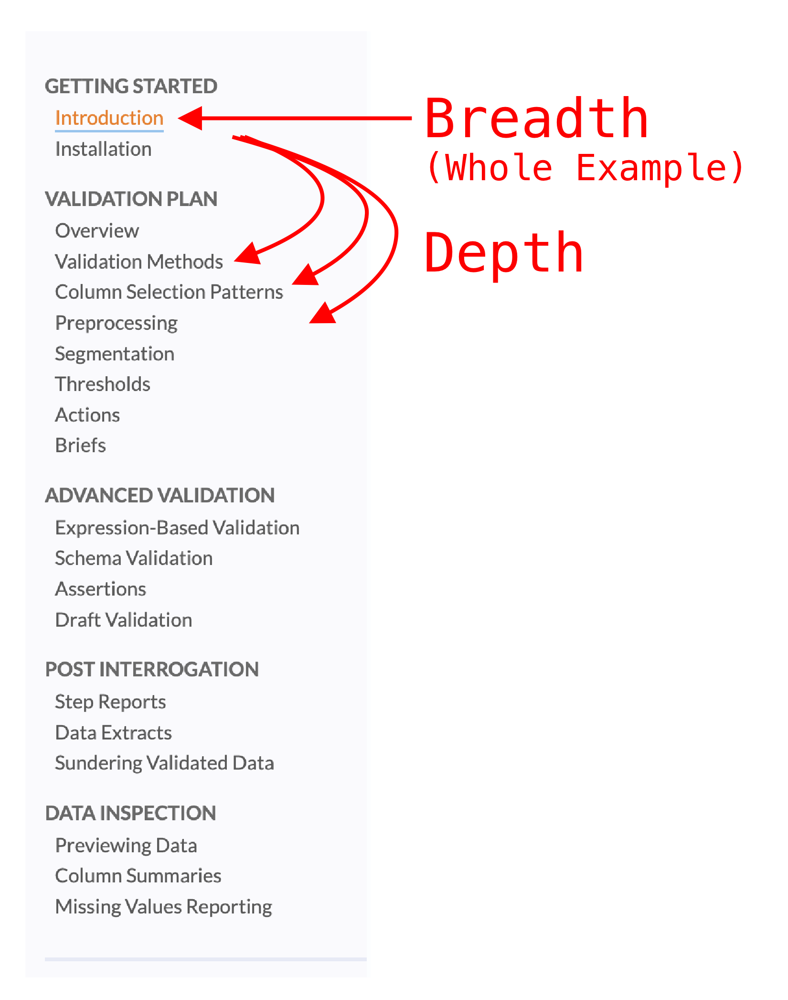
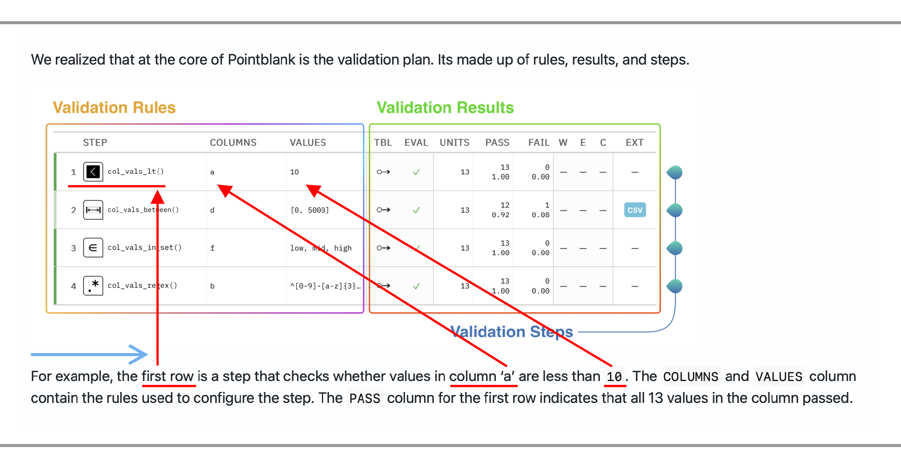
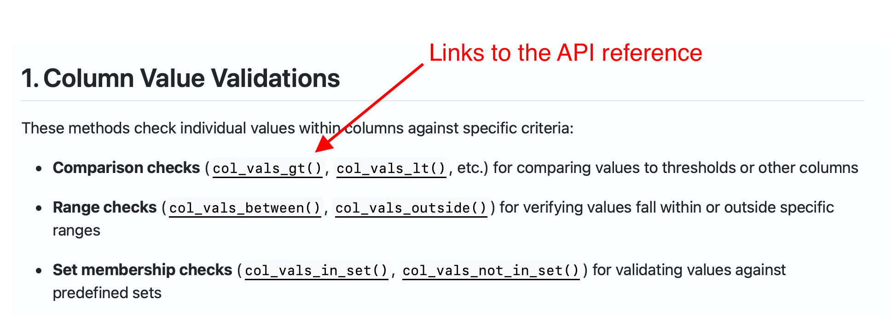
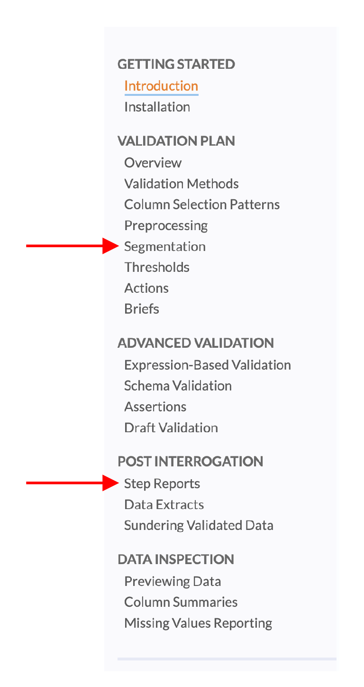
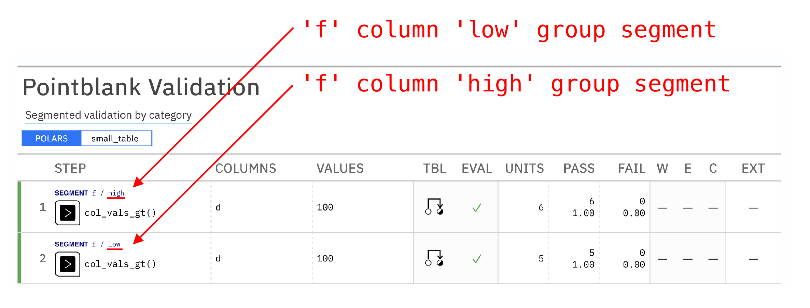
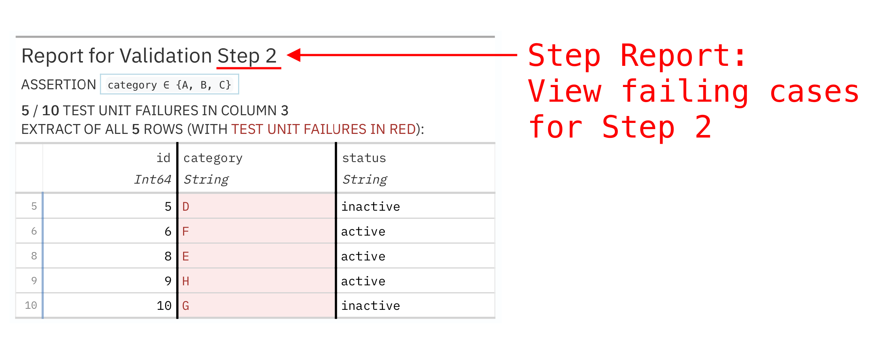

Overhauling Pointblank’s User Guide
The Pointblank documentation just got a major upgrade! We’ve completely overhauled our User Guide. Our goal was to enable readers to start fast on validation and work through the many pieces needed in realistic situations.
We realized that at the core of Pointblank is the validation plan. Its made up of rules, results, and steps.

For example, the first row is a step that checks whether values in column ‘a’ are less than 10. The COLUMNS and VALUES column contain the rules used to configure the step. The PASS column for the first row indicates that all 13 values in the column passed.
In this post, we’ll cover:
- using a spiral sequence to balance introductory breadth with subsequent depth
- improving examples with direct explanatory text
- rounding out API coverage for cross-linking
- surfacing advanced topics
Let us walk you through the key improvements in our refreshed User Guide!
Introduction: Embracing the Spiral Sequence
We chose to use a spiral sequence for our Introduction and Validation Plan section. The Introduction quickly covers parts of validation plan, while each article of the Validation Plan section dives deeper into different aspects of defining validation rules.

The introduction does a broad pass on the validation plan table diagram, identifying the core pieces of the output and then giving a quick overview of the code that produced it. This sets people up for the Validation Plan section in the guide, where each concept is discussed in depth.
Improving Examples
Examples are everywhere in the User Guide. We’ve tightened up our approach to examples by:
- presenting example code, output, or both, early in each section
- showing the actual output you’ll see in your environment
- following up with explanatory text that guides attention to specific places in the output
This approach makes learning more intuitive. Here’s an excerpt that shows this in practice.

The blue arrow marks the flow of reading and the red arrows map where we anticipate people will look from the text to the output. Focusing explicitly on where we think attention will go forces us to think carefully about exactly what readers will get from the output. The hope is that readers get to work more quickly on new concepts.
Rounding Out API Coverage
Documentation has to balance jobs between a user guide and an API Reference:
- User Guide: explains concepts that cut across functions (like common arguments across validation methods)
- API Reference: explains each individual function
Importantly, user guides often link to the API reference so, as part of this work, we made sure that all individual API entries are well-documented and linked to from the guide. Here’s an excerpt from the User Guide that shows links marked:

Surfacing Advanced Topics
There’s a lot of potential slicing and dicing involved in validation, as well as work after validation (post interrogation) to make sense of the results. We added pages to the User Guide for some core situations. In this section, I’ll highlight two advanced topics we added pages for:
- segmentation: splitting a column into groups, and validating each group
- step reports: view failing cases (e.g., view rows of data that failed validation)
These are marked in the User Guide sidebar screenshot below:

Segmentation
Here’s a screenshot of a validation report with two validation steps, one for each segment ("low" and "high") in the f column of the small_table dataset.

Notice that segments split columns into groups and apply the same validation to each of the groups. Each group is given its own step.
Each of the 20+ validation methods accept a segment= argument. The value of the Segmentation article in the User Guide is to describe this cross-cutting behavior in a single place.
Compare the segments= parameter in the API Reference (e.g., look at col_vals_gt()) and the Segmentation article to get a feel for how each location documents the segments feature.
Step Report
Step reports display failing cases (e.g., rows) for a validation step, so you can dig deeper into validation failures. Here’s a screenshot of a step report for some validation step 2:

Notice the arrow pointing to ‘Step 2’ in the title. Failing values are highlighted in red. Once we know we have failures, it’s important to take action and discover why data is failing. Looking at failing cases in step reports often uncovers obvious causes behind failures.
The get_step_report() entry is one of 50 in the API Reference. Here it is listed the API Reference, in the Interrogation and Reporting section. Critically, it’s only one of 20 entries in the User Guide, which emphasizes its importance in validation workflows.
Looking Forward
The refreshed User Guide is just the beginning of our documentation improvements. We’re committed to continuously enhancing our documentation to support your data validation needs.
Michael Chow gave feedback on this User Guide in preparation for his upcoming talk at SciPy 2025.
We’d love to hear your feedback on the new User Guide! Feel free to open an issue on our GitHub repository with suggestions, corrections, or requests for additional topics you’d like to see covered. You can also join our community discussions in the dedicated #Documentation channel on our Discord server, where you can share ideas, ask questions, and get help directly from the Pointblank team and other users.